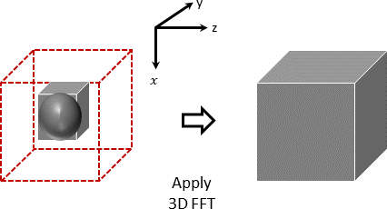

Collaborations with other projects
This page lists collaborations with other projects to use FFTX for algorithm kernels.
Spinifel single-particle imaging
Spinifel is an application that recovers the density distribution of molecules from X-ray diffraction images. It is being developed at Lawrence Berkeley National Laboratory, SLAC National Accelerator Laboratory, and Los Alamos National Laboratory.
Spinifel is written in Python and depends on the NumPy and CuPy libraries. Two kernels within Spinifel make heavy use of FFTs: free-space convolution and phasing.
The Python Package for FFTX
includes a module, convo, with interfaces to functions
performing these two operations.
The free-space convolution kernel has two 3D input arrays:
ugrid, of dimensionsM x M x M;F_ugrid_conv_, of dimensions2M x 2M x 2M.
The original Python code for this kernel is:
ugrid_ups = cupy.zeros((2*M,) * 3, dtype=uvect.dtype) ugrid_ups[:M, :M, :M] = ugrid F_ugrid_ups = cupy.fft.fftn(np.fft.ifftshift(ugrid_ups)) F_ugrid_conv_out_ups = F_ugrid_ups * F_ugrid_conv_ ugrid_conv_out_ups = cupy.fft.fftshift(cupy.fft.ifftn(F_ugrid_conv_out_ups)) ugrid_conv_out = ugrid_conv_out_ups[:M, :M, :M]
The output array
ugrid_conv_outhas dimensionsM x M x M.With the Python Package for FFTX, we can replace this kernel with the line:
ugrid_conv_out = fftx.convo.mdrfsconv(ugrid, F_ugrid_conv_)
The phasing kernel has two 3D input arrays:
rho_, of dimensionsM x M x M;amplitudes, also of dimensionsM x M x M.
The original Python code for this kernel is:
rho_hat_ = cupy.fft.fftn(rho_) phases_ = cupy.angle(rho_hat_) amp_mask_ = cupy.ones((M, M, M), dtype=cupy.bool_) amp_mask_[0, 0, 0] = 0 rho_hat_mod_ = cupy.where(amp_mask_, amplitudes_ * cupy.exp(1j*phases_), rho_hat_) rho_mod_ = cupy.fft.ifftn(rho_hat_mod_).real
The output array
rho_mod_has dimensionsM x M x M.With the Python Package for FFTX, we can replace this kernel with the line:
rho_mod_ = fftx.convo.stepphase(rho_, amplitudes_)
Both free-space convolution (mdrfsconv)
and phasing (stepphase) are implemented in the
convo module of the
Python Package for FFTX
as integrated algorithms. That is to say, each instance on its particular
size is run through the SPIRAL code-generation system, optimizing
computation and communication within the whole kernel.
This approach speeds up both kernels by 4 times over the
original Python with CuPy on arrays of the sizes used by Spinifel
(M set to 81, 105, 125, 165, 189, or 225).
Plane Wave Distributed FFT
In the plane wave (PW) implementation for the electron wavefunction basis set in density functional theory (DFT), different parts of the Hamiltonian are evaluated in real space or Fourier space depending on which is the most efficient. For example, the Kinetic Energy term is evaluated in Fourier space while the electron-electron interaction is evaluated in real space. Fourier transforms are used to move the wavefunctions and potential terms between real and Fourier space. Each wavefunction is defined on a 3D grid in real space and a sphere of points in Fourier space. The sphere comes from the energy cut-off in the Fourier expansion which is the maximum length of the wavevector corresponding to a sphere in Fourier space. The diameter of the sphere is typically half the size of the real-space grid dimension as to maintain the same accuracy in real space, as the calculations in Fourier space, the real space grid must be larger. Plane wave DFT based codes therefore require a specialized distributed 3D FFT going from a sphere in Fourier space to a standard 3D grid in real space.
In the parallel distributed FFTX library the user can specify an embedded grid within the full grid, in Fourier space, that contains all the non-zero Fourier coefficients. In the case of the plane wave implementation we can embed the sphere in a smaller grid that contains the sphere to create a 3D FFT specific to plane wave codes.
The figure below shows the pruned Fourier space grid on the left, and the full real-space grid on the right.
In the case of a typical plane wave code application where the sphere diameter is half the size of the full grid this specialized 3D FFT will perform 1.7 times fewer FLOPs and communicate four times less data than using a standard full grid 3D FFT (for a standard 1D pencil data layout where we have complete planes on each GPU/CPU).
The stand-alone benchmark, which can be used in other PW codes, takes as input, the half size grid in Fourier space that contains the sphere padded with zeros, as shown in the figure above. The output is then the full double sized grid in real space. An example of how to use this PW FFT is given in the repo directory examples/3DDFT_mpi which also contains a README file explaining the general usage of the distributed 3D FFTX routines.
As a proof of principle, we have implemented the embedded PW FFTX routine in the PW branch of NWChem and obtained the same results, to the specified degree of convergence for a benchmark carbon dimer molecule, as using their native distributed sphere to cube FFTs. This was run on the Frontier Cray/HP leadership class computer at Oak Ridge National Laboratory (ORNL).